1040B32 front fuel delivery line - r r
- Path
- Procedures > 10 ENGINE > 1040 FUEL TANK AND PIPES > 1040B FUEL SUPPLY/RETURN CIRCUIT PIPE > 1040B32 front fuel delivery line - r r
- Kind
- repair procedure (removal / refitting; the operation number is the code)
- Applies to
- engines: 1.4 8v, 1.6 16v, 1.3 JTD 16V, 1.9 JTD 8V; all production periods
- Interactive page
- https://sloeber94.github.io/elrnDB-fDbl/en/#/2584353
Applies to: engines: 1.6 16v; all production periods
 Removing
Removing
 Refitting
RefittingPosition the vehicle on a lift.
Disconnect the negative battery terminal.
1. Unscrew bolts (1a), disconnect collars (1b), then raise and remove the air filter cover (1c) with air sleeve.
2. Discharge the fuel pressure with the tool connected to the valve on the single fuel manifold pipe.
Description | Code | |
|---|---|---|
2 | Rapid attachment connector | 1.870.684.000 |
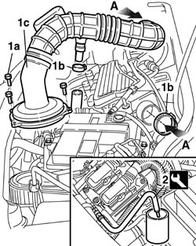
Applies to: engines: 1.6 16v; all production periods
1. Disconnect the fuel delivery pipe pipe fast-on fitting to the manifold.
2. Unscrew bolt (2a) securing the fuel delivery pipe bracket (2b) and evaporation control system pipe to the bulkhead separating the passenger compartment from the engine compartment.
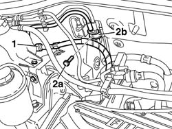
Applies to: engines: 1.6 16v; all production periods
Op. 3340B56 RIGID PIPE FROM HYDRAULIC CONTROL UNIT TO RIGHT FRONT BRAKE - R.R..
Raise the vehicle on the lift.
Op. 7055B54 PROTECTION/GUARD UNDER ENGINE - R.R.
1. Arrange a container beneath the vehicle, then remove collar (1a) and disconnect sleeve (1b) to drain the engine coolant.
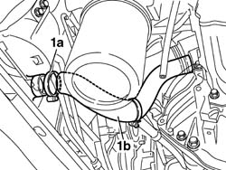
Applies to: engines: 1.6 16v; all production periods
1. Turn retaining pins (1a) and remove evaporation control system and fuel delivery pipe protections (1b).
2. Disconnect the quick connector joining the front fuel delivery pipe to the intermediate pipe.
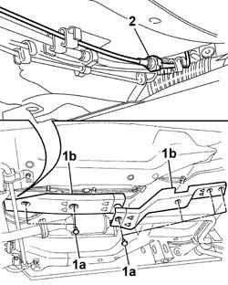
Applies to: engines: 1.6 16v; all production periods
Lower the vehicle on the lift.
1. Disconnect the coolant supply and return pipes to the vehicle interior heater.
2. Disconnect the vacuum intake pipe to the brake servo.
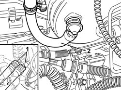
Applies to: engines: 1.6 16v; all production periods
1. Release the front fuel supply pipe from the retaining bands and remove it from the engine compartment.
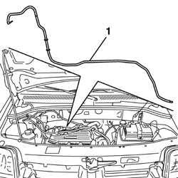
Applies to: engines: 1.6 16v; all production periods
Refitting
RemovingPosition the front pipe carrying fuel to the engine compartment, acting to avoid kinks or twists in the pipe.
Secure the fuel delivery pipe by means of collars to the bulkhead separating engine compartment/passenger compartment.
Connect the vacuum intake pipe to the brake servo.
Connect the coolant supply and return pipes to the vehicle interior heater.
Raise the vehicle on the lift.
Connect the quick connector joining the front fuel delivery pipe to the intermediate pipe.
Position the evaporation system pipe and fuel delivery pipe protections and secure by means of retaining pins.
Connect the engine cooling system sleeve to the radiator and secure using the retaining collar.
Op. 7055B54 PROTECTION/GUARD UNDER ENGINE - R.R..
Lower the vehicle on the lift.
Op. 3340B56 RIGID PIPE FROM HYDRAULIC CONTROL UNIT TO RIGHT FRONT BRAKE - R.R..
Secure the fuel delivery pipe and evaporation control system pipe to the bulkhead separating the passenger compartment from the engine compartment by means of the bracket retaining bolt.
Connect the fuel delivery pipe pipe fast-on fitting to the manifold.
Position the air filter cover and the connection sleeve to the throttle body.
Connect the negative battery lead.
Op. 0010T20 ENGINE COOLANT - CHANGE.
Remove the vehicle from the lift.
Applies to: engines: 1.3 JTD 16V; all production periods
Removing
RefittingMake sure that the ignition key is in the OFF position, then disconnect the negative battery terminal.
Description | Connector | |
|---|---|---|
- | Battery |
1. Disconnect the electrical connection from the air flow meter.
Description | Connector | |
|---|---|---|
1 | Air flow meter |
2. Loosen the collar and disconnect the air intake sleeve to the turbocharger, air flow meter side.
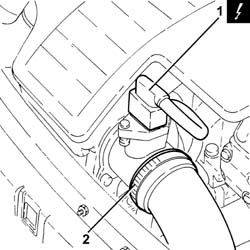
Applies to: engines: 1.3 JTD 16V; all production periods
1. Loosen the band (1a) and disconnect the hose (1b) from the air intake.
2. Remove the air filter (2a) complete with air flow meter (2b) releasing it firstly from the pegs underneath and then from the rear fastening.
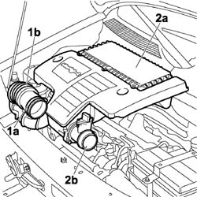
Applies to: engines: 1.3 JTD 16V; all production periods
Undo the fuel filler cap to discharge the pressure in the system and remove it.
1. Disconnect the rapid connector for the front fuel supply pipe, fuel filter side.
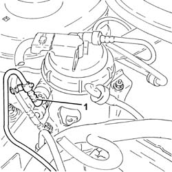
Applies to: engines: 1.3 JTD 16V; all production periods
1. Disconnect the front fuel supply pipe rapid connector, pressure pump side.
2. Unscrew bolts (2a) and open the pipe passage duct (2b).
3. Remove the front fuel delivery pipe (3a) after releasing it from collar (3b).
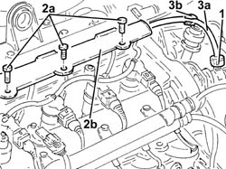
Applies to: engines: 1.3 JTD 16V; all production periods
Refitting
RemovingRefit the front fuel delivery pipe and secure it with the collar.
Close the pipe passage duct and secure with bolts.
Connect the rapid connector for the front fuel supply pipe, fuel filter side.
Connect the front fuel supply pipe rapid connector, pressure pump side.
Position the air filter in its seat with the air flow meter, secure to the rear fastening and then to the underlying pins.
Connect the flexible sleeve to the air intake on the crossmember and tighten the retaining collar.
Connect the air intake sleeve to the turbocharger, air flow meter side, and tighten the collar.
Connect the electrical connection to the air flow meter.
Description | Connector | |
|---|---|---|
- | Air flow meter |
Connect the negative battery terminal.
Description | Connector | |
|---|---|---|
- | Battery |
Applies to: engines: 1.9 JTD 8V; all production periods
Removing
RefittingPosition the vehicle on a lift.
Proceed with the removal
Proceed with the removal
Op. 5530B52 BATTERY SUPPORT/DRIP TRAY - R.R..
Proceed with the removal
Op. 1044B10 FUEL FILTER ASSEMBLY - R + R OR REPLACE.
Proceed with the removal
Op. 3330D24 VACUUM PIPE FOR BRAKE SERVO - R+R.
Proceed with the removal
Op. 7210E22 R.R. WINDSCREEN BASE TRIM.
1. Undo the nuts (1a) and remove the protection (1b).
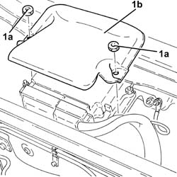
Applies to: engines: 1.9 JTD 8V; all production periods
1. Disconnect the electrical connections (1a) and (1b) from the diesel electronic injection system control unit.
Description | Connector | |
|---|---|---|
1a | Engine management control unit |
Description | Connector | |
|---|---|---|
1b | Engine management control unit |
2. Undo the nut (2a) and disconnect the earth lead (2b).
Description | Connector | |
|---|---|---|
2b | Injection control unit earth |
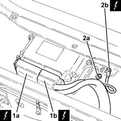
Applies to: engines: 1.9 JTD 8V; all production periods
1. Unscrew nut (1a) and move aside the glow plug preheating control unit (1b) without disconnecting the electrical wiring.
2. Undo the nuts (2a) fixing the bulkhead coupling (2b).
3. Withdraw the wiring with electrical connections from the engine compartment bulkhead.
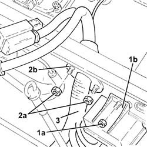
Applies to: engines: 1.9 JTD 8V; all production periods
1. Loosen the band and disconnect the air supply hose from the heat exchanger to the intake manifold, throttle body side.
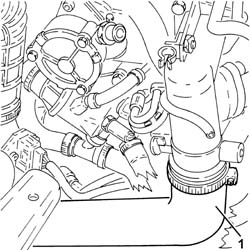
Applies to: engines: 1.9 JTD 8V; all production periods
1. Undo the clip (1a) and disconnect the rigid pipe from the master cylinder to the right front brake (1b), flexible pipe side.
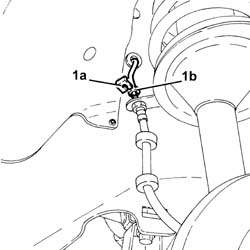
Applies to: engines: 1.9 JTD 8V; all production periods
1. Undo the connector (1a) and disconnect the rigid pipe from the master cylinder to the right front brake (1b), master cylinder side.
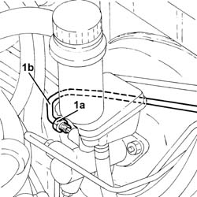
Applies to: engines: 1.9 JTD 8V; all production periods
1. Remove the rigid pipe from the master cylinder to the right rear brake after having released it from the fastenings.
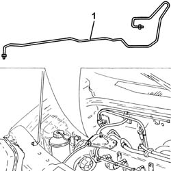
Applies to: engines: 1.9 JTD 8V; all production periods
Drain the air conditioning system
Op. 5040A10 AIR CONDITIONING REFRIGERANT CIRCUIT - DRYING AND REPRESSURIZING.
1. Loosen the collar and disconnect the coolant return pipe from the engine coolant reservoir.
2. Undo the bolts (2a) and move the engine coolant supply reservoir (2b).
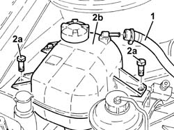
Applies to: engines: 1.9 JTD 8V; all production periods
1. Unscrew nut (1a) and disconnect the pipe from the evaporator to the compressor inlet pipe (1b), compressor inlet pipe side.
2. Release the pipe from the evaporator to the inlet pipe to the compressor from the retaining collar.
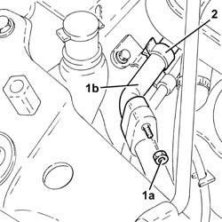
Applies to: engines: 1.9 JTD 8V; all production periods
1. Unscrew the bolt securing the bracket fastening the air conditioning system pipes to the body.
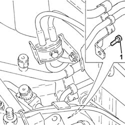
Applies to: engines: 1.9 JTD 8V; all production periods
1. Unscrew nut (1a) and disconnect the pipe from the evaporator to the compressor inlet pipe (1b), expansion valve side.
2. Undo the nut (2a) and disconnect the pipe from the drier filter to the expansion valve (2b), expansion valve side.
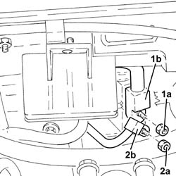
Applies to: engines: 1.9 JTD 8V; all production periods
1. Remove the pipe from the evaporator to the compressor inlet pipe.
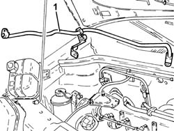
Applies to: engines: 1.9 JTD 8V; all production periods
1. Undo the bolts fixing the fuel pipe bracket to the bodyshell.
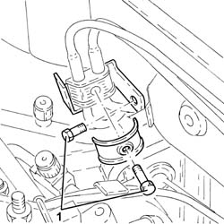
Applies to: engines: 1.9 JTD 8V; all production periods
1. Disconnect the rapid connector for the front fuel return pipe, fuel return manifold pipe side.
2. Release the fuel pipes from the fastenings on the side panel and engine compartment bulkhead.
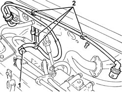
Applies to: engines: 1.9 JTD 8V; all production periods
Proceed with the removal
Op. 7055B54 PROTECTION/GUARD UNDER ENGINE - R.R..
1. Undo the fastenings (1a) and remove the fuelpipe protection (1b).
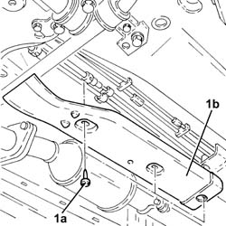
Applies to: engines: 1.9 JTD 8V; all production periods
1. Disconnect the front fuel supply pipe rapid connector to the intermediate connector.
2. Disconnect the front fuel return pipe rapid connector to the intermediate connector.
3. Release the front fuel supply/return pipe from the underbody fastenings.
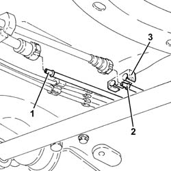
Applies to: engines: 1.9 JTD 8V; all production periods
1. Withdraw and remove the front fuel delivery pipe.
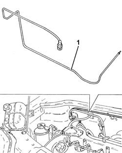
Applies to: engines: 1.9 JTD 8V; all production periods
Refitting
RemovingPlace the front fuel supply pipe back in its housing.
Secure the front fuel supply/return pipe to the underbody fastenings.
Connect the front fuel return pipe rapid connector to the intermediate connector.
Connect the front fuel supply pipe rapid connector to the intermediate connector.
Place the fuel pipe protection in its housing and secure it using the fastenings.
Proceed with the refitting
Op. 7055B54 PROTECTION/GUARD UNDER ENGINE - R.R..
Secure the fuel pipes to the fastenings on the side panel and engine compartment bulkhead.
Connect the rapid connector for the front fuel return pipe, fuel return manifold pipe side.
Tighten the bolts fixing the fuel pipe bracket to the bodyshell.
Refit the pipe from the evaporator to the compressor inlet pipe.
1. Connect the pipe from the dehydrating filter to the expansion valve (1a) expansion valve side and tighten the nut (1b) to the recommended torque.
Fastening | Component | dia | Value (daNm) | |
|---|---|---|---|---|
1b | Nut | PIPE FRM FILTER/DEHYDRATOR TO EXPAN VALV | M6 | (Expansion valve side) 0.7 - 1.1 |
2. Connect the pipe from the evaporator to the compressor inlet pipe (2a) expansion valve side and tighten the nut (2b) to the recommended torque.
Fastening | Component | dia | Value (daNm) | |
|---|---|---|---|---|
2b | Nut | PIPE FROM EVAPORATOR | M6 | (Expansion valve side) 0.7 - 1.1 |
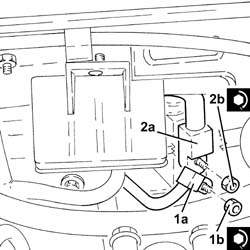
Applies to: engines: 1.9 JTD 8V; all production periods
Tighten the bolt securing the bracket fastening the air conditioning system pipes to the body.
1. Secure the pipe from the evaporator to the inlet pipe to the compressor to the retaining collar.
2. Connect the pipe from the evaporator to the compressor inlet pipe (2a) compressor intake pipe side and tighten the nut (2b) to the recommended torque.
Fastening | Component | dia | Value (daNm) | |
|---|---|---|---|---|
2b | Nut | PIPE FROM EVAPORATOR | M6 | (Compressor inlet pipe side) 0.7 - 1.1 |
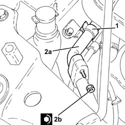
Applies to: engines: 1.9 JTD 8V; all production periods
Fit the engine cooling radiator in place and secure it using the bolts.
Connect the coolant return pipe to the engine coolant reservoir to the coolant reservoir and tighten the band.
Place the rigid pipe from the master cylnder to the right rear brake back in its housing and secure it.
1. Connect the rigid pipe from the master cylinder to the right front brake (1a), master cylinder side and tighten the connector (1b) to the recommended torque.
Fastening | Component | dia | Value (daNm) | |
|---|---|---|---|---|
1b | Connector | FRONT BRAKE RIGID PIPE FROM MASTER CYLINDER | M10 | (Master cylinder side) 1.3 - 1.5 |
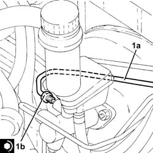
Applies to: engines: 1.9 JTD 8V; all production periods
1. Tighten the fitting on the rigid pipe from the master cylinder to the right front brake (1b), flexible pipe side and secure with clip (1b).
Fastening | Component | dia | Value (daNm) | |
|---|---|---|---|---|
1a | Connector | FRONT BRAKE RIGID PIPE FROM MASTER CYLINDER | M10 | (Flexible pipe side) 1.3 - 1.5 |
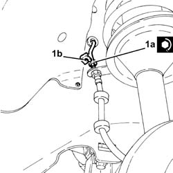
Applies to: engines: 1.9 JTD 8V; all production periods
Connect the air supply hose from the heat exchanger to the intake manifold, throttle body side and tighten the collar.
Position the wiring with electrical connections for the diesel electronic injection system control unit through the passage on the engine compartment bulkhead.
Tighten the bulkhead coupling nuts.
Connect the earth lead and tighten the nut.
Connect the electrical connections to the diesel electronic injection system control unit.
Fit the protection in its housing and secure it using the nuts.
Proceed with the refitting
Op. 7210E22 R.R. WINDSCREEN BASE TRIM.
Place the heater plugs control unit in position and secure it using the nut.
Proceed with the refitting
Op. 3330D24 VACUUM PIPE FOR BRAKE SERVO - R+R.
Proceed with the refitting
Op. 1044B10 FUEL FILTER ASSEMBLY - R + R OR REPLACE.
Proceed with the refitting
Op. 5530B52 BATTERY SUPPORT/DRIP TRAY - R.R..
Proceed with the refitting
Refill the air conditioning system
Op. 5040A10 AIR CONDITIONING REFRIGERANT CIRCUIT - DRYING AND REPRESSURIZING.
Remove the vehicle from the lift.
Applies to: engines: 1.4 8v; all production periods
Removing
RefittingTurn the ignition key to the OFF position.
Disconnect the negative battery terminal.
Description | Connector | |
|---|---|---|
- | BATTERY |
Op. 0010T84 COOLANT FOR AIR CONDITIONING SYSTEM - DEHYDRATE AND RECHARGE
Op. 1048A10 AIR FILTER ASSEMBLY - R.R.
Op. 7055B54 PROTECTION/GUARD UNDER ENGINE - R.R.
Op. 5040A20 AIR CONDITIONING COMPRESSOR - R+R - INCLUDES FLUID LEVEL CHECK AND TOP UP IF NECESSARY
Position a suitable container for collecting the engine coolant beneath the vehicle.
1. Using the special tool, remove the band securing the hose to the radiator.
2. Disconnect the hose from the radiator and drain the engine coolant into the container.

Applies to: engines: 1.4 8v; all production periods
1. Unscrew protective cap (1a) and discharge the fuel pressure through fitting (1b).
Description | Code | Function | |
|---|---|---|---|
1b | Connector | 1.870.684.000 | Fuel system pressure drainage |
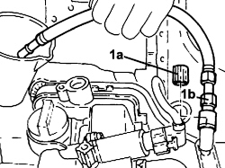
Applies to: engines: 1.4 8v; all production periods
1. Disconnect the quick connector from the fuel rail and release the hoses from the anchorage points.
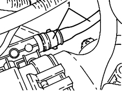
Applies to: engines: 1.4 8v; all production periods
1. Unscrew bolt (1a) securing the fuel delivery pipe bracket (1b) and evaporation control system pipe to the bulkhead separating the passenger compartment from the engine compartment.
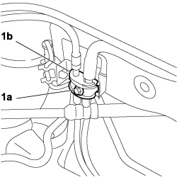
Applies to: engines: 1.4 8v; all production periods
Op. 3340B56 RIGID PIPE FROM HYDRAULIC CONTROL UNIT TO RIGHT FRONT BRAKE - R.R.
1. Turn retaining pins (1a) and remove evaporation control system and fuel delivery pipe protections (1b).
2. Disconnect the quick connector joining the front fuel delivery pipe to the intermediate pipe.
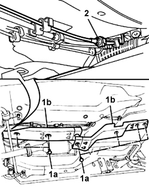
Applies to: engines: 1.4 8v; all production periods
1. Disconnect the coolant supply and return pipes to the vehicle interior heater.
2. Disconnect the vacuum intake pipe to the brake servo.
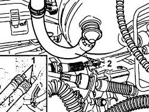
Applies to: engines: 1.4 8v; all production periods
1. Release the front fuel supply pipe (1a) from the retaining bands (1b) and (1c) and remove it from the engine compartment.
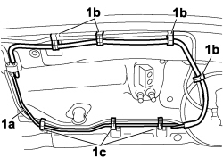
Applies to: engines: 1.4 8v; all production periods
Refitting
RemovingPosition the front pipe carrying fuel to the engine compartment, acting to avoid kinks or twists in the pipe.
Secure the fuel delivery pipe by means of clips to the bulkhead separating engine compartment/passenger compartment.
Connect the vacuum intake pipe to the brake servo.
Connect the coolant supply and return pipes to the vehicle interior heater.
Connect the quick connector joining the front fuel delivery pipe to the intermediate pipe.
Position the evaporation system pipe and fuel delivery pipe protections and secure by means of retaining pins.
Connect the engine cooling system sleeve to the radiator and secure using a new retaining collar.
Op. 7055B54 PROTECTION/GUARD UNDER ENGINE - R.R.
Op. 3340B56 RIGID PIPE FROM HYDRAULIC CONTROL UNIT TO RIGHT FRONT BRAKE - R.R.
Secure the fuel delivery pipe and evaporation control system pipe to the bulkhead separating the passenger compartment from the engine compartment by means of the bracket retaining bolt.
Connect the quick connector of the fuel delivery pipe to the manifold and secure the flexible pipe to the anchorage points.
Op. 5040A20 AIR CONDITIONING COMPRESSOR - R+R - INCLUDES FLUID LEVEL CHECK AND TOP UP IF NECESSARY
Op. 1048A10 AIR FILTER ASSEMBLY - R.R.
Op. 0010T20 ENGINE COOLANT - CHANGE
Op. 0010T84 COOLANT FOR AIR CONDITIONING SYSTEM - DEHYDRATE AND RECHARGE
Connect the negative battery lead.
Description | Connector | |
|---|---|---|
- | BATTERY |
Remove the vehicle from the lift.
Topics linked from this page (17)
- 0010T20 coolant change
- 0010T84 coolant for air conditioning system dehydrate and recharge
- 1044B10 fuel filter assembly - r + r or replace
- 1048A10 air cleaner filtering element - replace
- 3330D24 vacuum pipe for brake servo - r+r
- 3340B56 RIGID PIPE from hydraulic CONTROL UNIT to RIGHT FRONT BRAKE - R.R.
- 5040A10 Air conditioning refrigerant CIRCUIT - Draining and Refilling
- 5040A20 air conditioner compressor - r+r - includes fluid level check and top up if necessary
- 5530B10 battery - r+r
- 5530B52 Battery DRIP TRAY/SUPPORT - R.R.
- 7055B54 under-engine guard - r r
- 7210E22 R.R. WINDSCREEN BASE TRIM
- A001 BATTERY
- C60 EARTH ON ENGINE ( ENGINE )
- K041 AIR FLOW METER
- M10A ENGINE MANAGEMENT ECU ( ENGINE )
- M10B ENGINE MANAGEMENT ECU ( ENGINE )